SubbieBill
SubbieBillSubbieBill › Aiuto
Come creare una fattura su SubbieBill
Aggiornato il 23 ottobre 2026
Ogni schermata, ogni pulsante. I riquadri arancioni e i numeri mostrano esattamente cosa toccare. La prima configurazione richiede circa 2 minuti; poi una fattura richiede circa 30 secondi.
I nomi dei pulsanti sono quelli dell'app in italiano. La fattura PDF è sempre in inglese.
Configura il tuo account (una volta sola)
1Apri SubbieBill
Vai su subbiebill.com dal telefono o dal computer e tocca Crea la mia prima fattura.
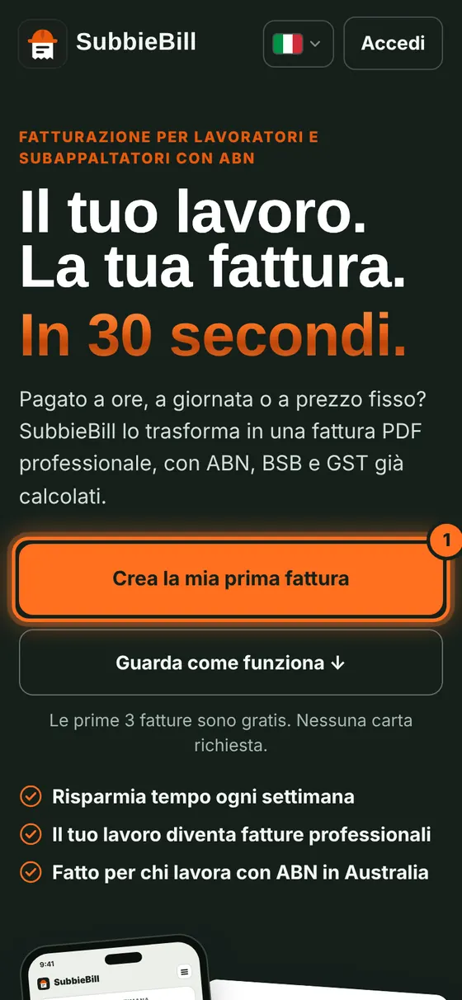
2Crea il tuo account
Scrivi la tua email, scegli una password, ripetila e tocca Crea il mio account gratuito. Hai già un account? Tocca Accedi in alto.
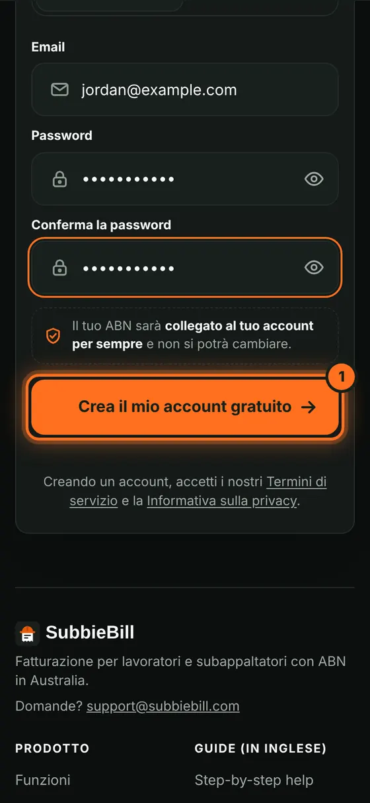
3Conferma la tua email
Ricevi un codice di 6 cifre via email da noreply@subbiebill.com. Scrivilo (1) e tocca Conferma la mia email (2). Niente email? Controlla lo spam.
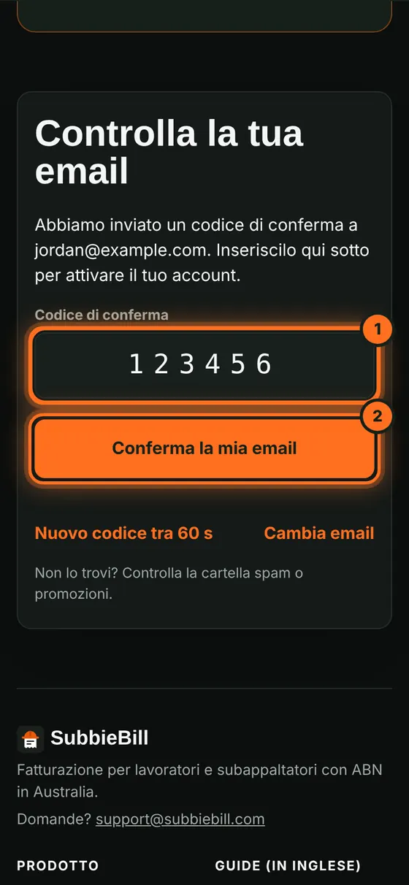
4Aggiungi nome e ABN
In I miei dati, scrivi Nome, Cognome e ABN, poi tocca Conferma il mio ABN. Controlla il numero e tocca Sì, continua. L'ABN resta collegato al tuo account.
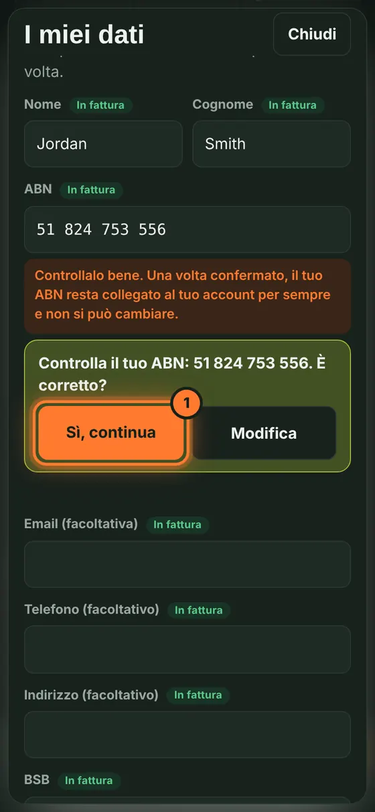
5Aggiungi banca e GST
Scrivi il BSB (1) e il Numero di conto (2) così il cliente sa dove pagarti. Per la GST, scegli Non registrato o Registrato alla GST (3). Poi tocca Fatto.
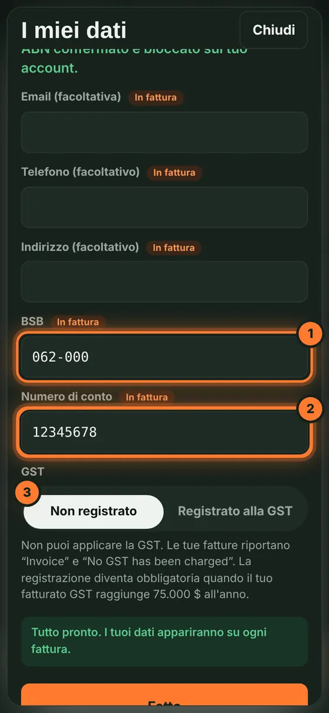
Fai una fattura
6Scegli cliente e periodo
Sotto Cliente, scrivi l'azienda che fatturi (1). Scegli Settimana, 2 settimane o Mese (2). La prossima volta, scegli il cliente dalla lista.
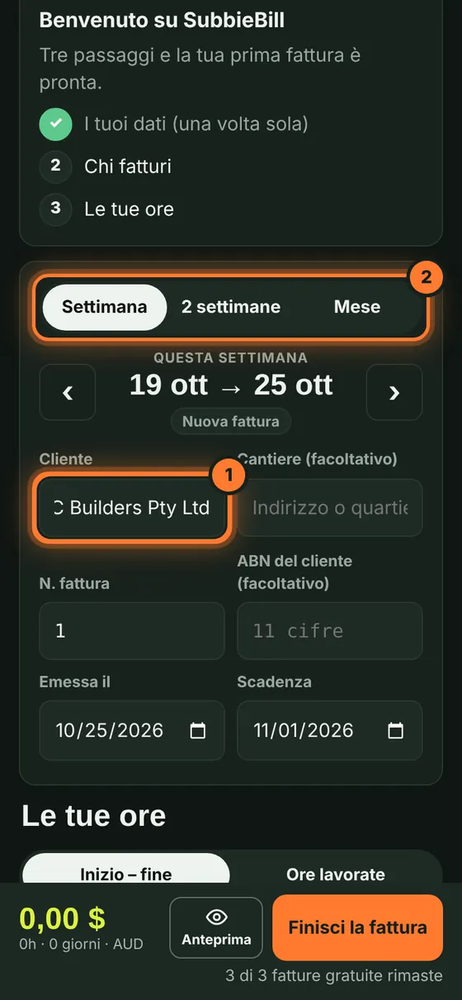
7Imposta la tariffa oraria
Scrivi la tua Tariffa oraria ($/h). Viene salvata per le prossime fatture.
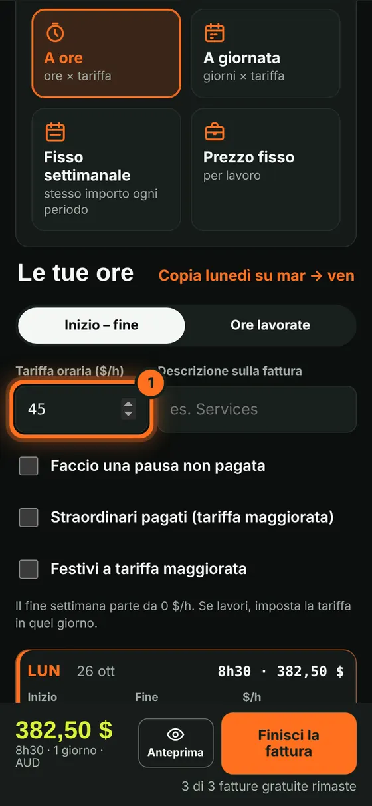
8Inserisci le ore
Con Inizio – fine selezionato, scegli inizio (1) e fine (2) del lunedì. Tocca Copia lunedì su mar → ven (3) per riempire la settimana, poi cambia i giorni diversi.
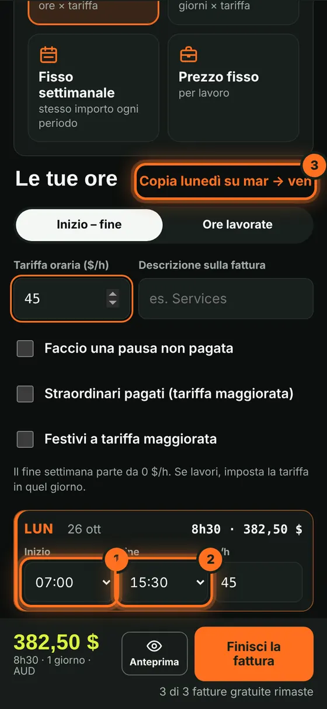
9Finisci la fattura
Controlla il totale in basso e tocca Finisci la fattura. Tocca Anteprima se vuoi vedere prima il PDF.
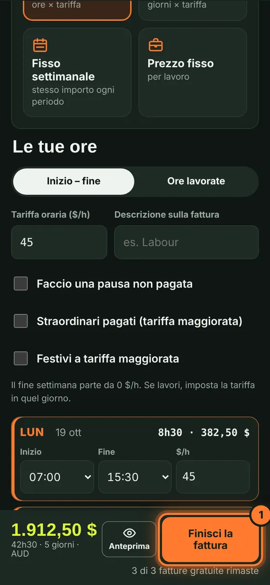
10Controlla e scarica
Controlla il riepilogo e tocca Finisci e scarica il PDF. La fattura riceve il suo numero e il PDF viene scaricato.
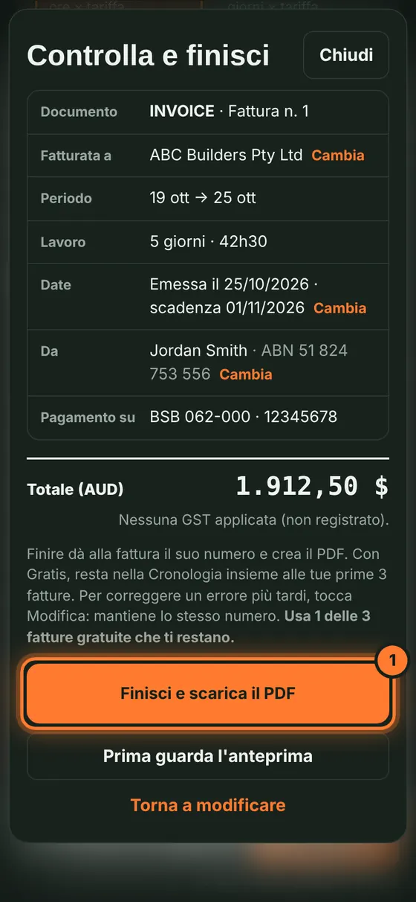
Dopo la fattura
11Mandala al cliente
Tocca Invia al cliente (1) per inviarla via email, oppure Scarica il PDF (2) per salvare il PDF e inviarlo tu.
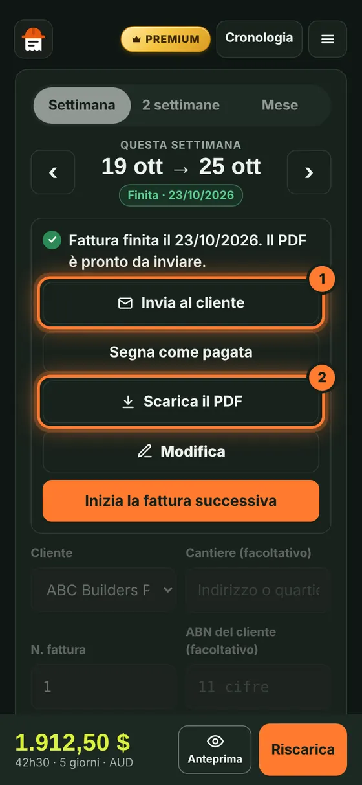
12Invio via email (Premium)
Scrivi l'email del cliente (1) e tocca Invia (2). Ricevi una copia e la risposta del cliente arriva a te.
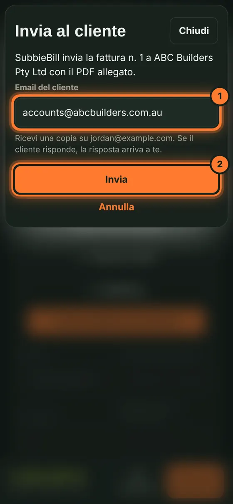
13Segui le tue fatture
Tocca Cronologia in alto per vedere tutte le fatture e i totali. Quando vieni pagato, tocca Segna come pagata.
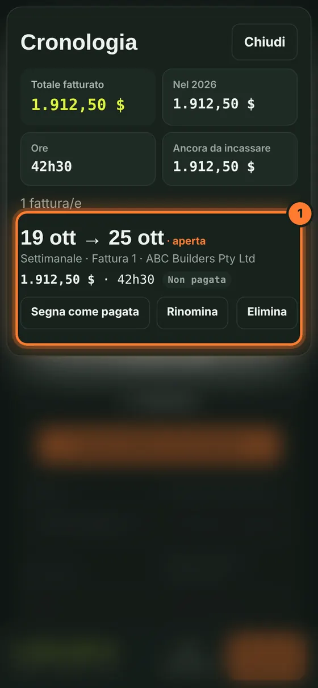
14Invita un amico
Tocca il menu (☰) in alto a destra, poi Invita un amico.
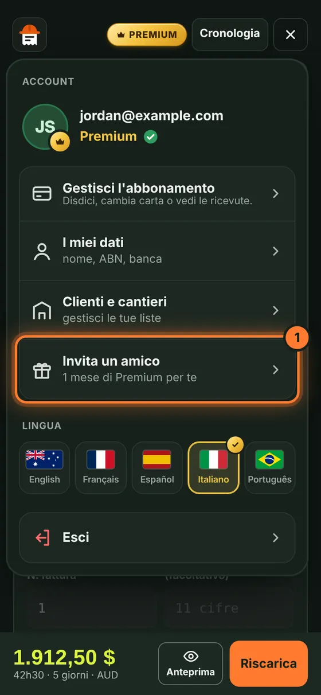
15Condividi il tuo link
Tocca Copia e invia il link. Il tuo amico riceve 1 fattura gratis in più; tu 1 mese di Premium quando si abbona.
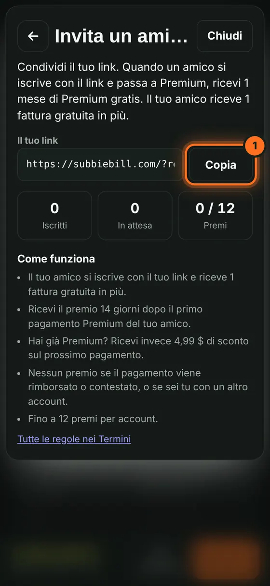
Risposte rapide
Quanto costa?
Le prime 3 fatture finite sono gratis. Premium costa A$4,99 al mese o A$39 all'anno: fatture illimitate, invio via email e cronologia completa.
Posso cambiare il mio ABN dopo?
No. Una volta confermato, l'ABN resta collegato al tuo account per sempre. Controllalo bene.
Non ho ricevuto il codice via email.
Aspetta un minuto e controlla spam o promozioni. L'email arriva da noreply@subbiebill.com. Puoi chiedere un nuovo codice dopo 60 secondi.
Posso correggere un errore dopo aver finito?
Sì. Apri la fattura e tocca Modifica. Mantiene lo stesso numero.